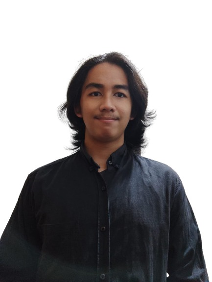

Curriculum Vitae

PROLUGUE
Hard work is important in life. but hard work without smart work will only slow progress. so I am the one who combines the two ways of working to improve myself
REACH ME AT
- Phone Number: 0851-5616-0761
- Email: soeltan027ghaffar@gmail.com
- My linkedin
- Adress: Komplek INKOPAD Blok D1 No 07, Ke.Tajurhalang, Kab.Bogor
BIODATA
- Nama: Soeltan Abdul Ghaffar
- Date of birth: 27 August 2002
- Gender: Men
- Status: Not married
- Age: 19
EXPERIENCE
- National Camp Committee 4 Scouts SIT Indonesia (2018)
- Commitee of "MOKAKU UPI 2021" at Indonesian Education University (2021)
- Commitee of "Bedah Film"; HIMATASKA's Event (2021-Now)
ORGANIZATION
- Secretary of Ambalan Salahuddin al Ayyubi (2018-2019)
- Secretary of Generation 7 SMAIT Ummul Quro Bogor
EDUCATION
- SD: SDN Kartika Sejahtera 01
- SMP:SMPIT Daarul Muttaqien
- SMA: SMAIT Ummul Quro Bogor
LANGUAGE
Indonesia dan Padang